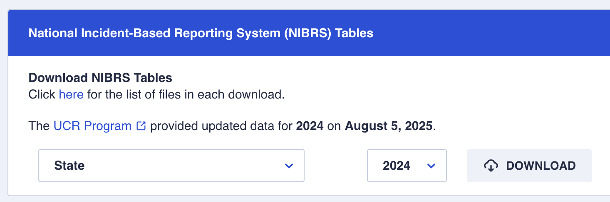

# A tibble: 6 × 8
year month day dep_time sched_dep_time dep_delay arr_time sched_arr_time
<int> <int> <int> <int> <int> <dbl> <int> <int>
1 2013 1 1 517 515 2 830 819
2 2013 1 1 533 529 4 850 830
3 2013 1 1 542 540 2 923 850
4 2013 1 1 544 545 -1 1004 1022
5 2013 1 1 554 600 -6 812 837
6 2013 1 1 554 558 -4 740 728Data Formats
2025-09-11
Data Formatting
“Every column is a variable”
All elements in a column are realizations of the same random variable, i.e. have the same data type and format
We need to make sure that that data type/format is correct (and in the most usable form)
Example: nycflights13
package contains data for US air travel in 2013.
Consider scheduled and actual departure time - how would we calculate the difference between them (to verify that dep_delay was calculated acurately)?
Flights - Departure times as integer
Obviously, can’t use regular calculus:
Min. 1st Qu. Median Mean 3rd Qu. Max. NA's
-600.000 0.000 0.000 4.065 0.000 2360.000 8255
FALSE TRUE
99777 228744 Data type does not match the variable
Flights - Departure times as datetimes
flights <- flights |> mutate(
dep_time_dttm = ymd_hm(sprintf("%d/%d/%d %d:%d", year, month, day, dep_time%/%100, dep_time%%100)),
sched_dep_time_dttm = ymd_hm(sprintf("%d/%d/%d %d:%d", year, month, day, sched_dep_time%/%100, sched_dep_time%%100)),
dep_delay_dttm = interval(sched_dep_time_dttm, dep_time_dttm)/minutes(1)
) Much better (but doesn’t capture changes around midnight)
Types of Data
Basic data types (read.csv):
- logical (binary:
TRUE/FALSE),
- numeric (integer, float/double),
- character (text)
Additional formats (read_csv):
- dates & times (
lubridatepackage)
Also check:
- factor variables (hybrid of numeric and text)
An example
The FBI Crime Data Explorer allows a download of different aggregates of data in Excel spread sheets.
 The downloaded data is available in the file state.zip.
An example (2)
Download the file state.zip and unzip it:
This creates the folder state with the three files:
NIBRS_Table_27_Crimes_Against_Persons_Offenses_Offense_Category_by_State_2024.xlsx
NIBRS_Table_28_Crimes_Against_Property_Offenses_Offense_Category_by_State_2024.xlsx
NIBRS_Table_29_Crimes_Against_Society_Offenses_Offense_Category_by_State_2024.xlsxAn Example (3)
Opening the file NIBRS_Table_28_Crimes_Against_Property_Offenses_Offense_Category_by_State_2024.xlsx shows a large table with some meta data at the top and one entry for each state:
An Example (4)
We import the spreadsheet with readxl::read_xlsx and skipping the first couple of lines:
property <- readxl::read_xlsx("state/NIBRS_Table_28_Crimes_Against_Property_Offenses_Offense_Category_by_State_2024.xlsx", skip = 4)
head(property)# A tibble: 6 × 16
State Number of \r\nParticipa…¹ Population\r\nCovere…² `Total \r\nOffenses`
<chr> <dbl> <dbl> <dbl>
1 <NA> NA NA NA
2 Total 14601 296527998 8237977
3 Alabama 418 5033518 132140
4 Alaska 32 450712 8934
5 Arizona 92 5307431 143887
6 Arkansas 361 3029333 96727
# ℹ abbreviated names: ¹`Number of \r\nParticipating\r\nAgencies`,
# ²`Population\r\nCovered`
# ℹ 12 more variables: `Offense Category` <chr>, ...6 <chr>, ...7 <chr>,
# ...8 <chr>, ...9 <chr>, ...10 <chr>, ...11 <chr>, ...12 <chr>, ...13 <chr>,
# ...14 <chr>, ...15 <chr>, ...16 <chr>Your turn
For the property crime data, create sensible variable names for the 6th through the 16th variable
Hint: you might want to try out what happens when you skip the first five lines.
The janitor package
janitor::clean_names removes spaces and special symbols; original first line is also removed
An example (6)
Some columns do not have the correct format:
tibble [53 × 16] (S3: tbl_df/tbl/data.frame)
$ state : chr [1:53] NA "Total" "Alabama" "Alaska" ...
$ number_of_participating_agencies: num [1:53] NA 14601 418 32 92 ...
$ population_covered : num [1:53] NA 2.97e+08 5.03e+06 4.51e+05 5.31e+06 ...
$ total_offenses : num [1:53] NA 8237977 132140 8934 143887 ...
$ offense_category : chr [1:53] "Arson" "31982" "597" "61" ...
$ x6 : chr [1:53] "Bribery" "849" "7" "4" ...
$ x7 : chr [1:53] "Burglary/\r\nBreaking &\r\nEntering" "655847" "11771" "881" ...
$ x8 : chr [1:53] "Counterfeiting/\r\nForgery" "142471" "2775" "149" ...
$ x9 : chr [1:53] "Destruction/\r\nDamage/\r\nVandalism" "1567082" "27264" "2489" ...
$ x10 : chr [1:53] "Embezzlement" "32845" "324" "37" ...
$ x11 : chr [1:53] "Extortion/\r\nBlackmail" "26555" "332" "24" ...
$ x12 : chr [1:53] "Fraud \r\nOffenses" "891661" "14346" "1148" ...
$ x13 : chr [1:53] "Larceny/\r\nTheft\r\nOffenses" "3832550" "62250" "3350" ...
$ x14 : chr [1:53] "Motor\r\nVehicle\r\nTheft" "750704" "8601" "606" ...
$ x15 : chr [1:53] "Robbery" "175072" "1817" "129" ...
$ x16 : chr [1:53] "Stolen \r\nProperty \r\nOffenses" "130359" "2056" "56" ...An example (7)
Is this dataset now tidy?
# A tibble: 6 × 16
state number_of_participating_agencies population_covered total_offenses
<chr> <dbl> <dbl> <dbl>
1 <NA> NA NA NA
2 Total 14601 296527998 8237977
3 Alabama 418 5033518 132140
4 Alaska 32 450712 8934
5 Arizona 92 5307431 143887
6 Arkansas 361 3029333 96727
# ℹ 12 more variables: offense_category <chr>, x6 <dbl>, x7 <dbl>, x8 <dbl>,
# x9 <dbl>, x10 <dbl>, x11 <dbl>, x12 <dbl>, x13 <dbl>, x14 <dbl>, x15 <dbl>,
# x16 <dbl>Conversion between types
Casting from specific to more general data type always works:
logical -> integer -> double/float -> character
as.integer,as.numeric,as.characterCasting to more specific data types only works when the values have the correct format
Maybe easier: use column specification in
readr.
Example: Box office data
The-Numbers.com provides a weekly summary of box office numbers for movies currently in theatres:
library(rvest)
url <- "https://www.the-numbers.com/box-office-chart/weekend/2025/08/22"
doc <- read_html(url)
tables <- doc |> html_table()
tables[[2]]# A tibble: 70 × 11
`` `` `Movie Title` Distributor Gross `%LW` Theaters TheatersChange
<chr> <chr> <chr> <chr> <chr> <chr> <chr> <chr>
1 1 (-) KPop Demon Hunte… Netflix $19,… "" 1,700 ""
2 2 (1) Weapons Warner Bro… $15,… "-37… 3,631 "+181"
3 3 (2) Freakier Friday Walt Disney $8,8… "-38… 3,675 "-300"
4 4 (4) The Fantastic Fo… Walt Disney $6,0… "-33… 3,190 "-165"
5 5 (5) The Bad Guys 2 Universal $5,1… "-32… 3,288 "-92"
6 6 (3) Nobody 2 Universal $3,7… "-60… 3,282 "+22"
7 7 (6) Superman Warner Bro… $3,4… "-35… 2,338 "-317"
8 8 N Honey Don’t Focus Feat… $3,0… "" 1,317 ""
9 9 (7) The Naked Gun Paramount … $2,9… "-39… 2,776 "-251"
10 10 (8) Jurassic World R… Universal $2,1… "-29… 2,100 "-170"
# ℹ 60 more rows
# ℹ 3 more variables: PerTheater <chr>, TotalGross <chr>,
# `Weekends InRelease` <chr>Controlling Column Types
Nicely formatted tables in html don’t result in nicely formatted data in R or python
Text files do not contain any information about column types
Different functions use different guessing heuristics (
read_csvfromreadrpackage is a lot better than baseread.csv, and faster)spec()show the specification of a data set intibbleformat
Current column specifications
cols(
...1 = col_character(),
...2 = col_character(),
`Movie Title` = col_character(),
Distributor = col_character(),
Gross = col_character(),
`%LW` = col_character(),
Theaters = col_number(),
TheatersChange = col_character(),
PerTheater = col_character(),
TotalGross = col_character(),
`Weekends InRelease` = col_number()
)Set column specifications
col_number() is lenient: ignores grouping mark, percent symbol, leading $, …
# A tibble: 6 × 11
Rank Rank_LW `Movie Title` Distributor Gross `%LW` Theaters TheatersChange
<dbl> <dbl> <chr> <chr> <dbl> <dbl> <dbl> <dbl>
1 1 NA KPop Demon Hun… Netflix 1.92e7 NA 1700 NA
2 2 1 Weapons Warner Bro… 1.54e7 -37 3631 181
3 3 2 Freakier Friday Walt Disney 8.90e6 -38 3675 -300
4 4 4 The Fantastic … Walt Disney 6.01e6 -33 3190 -165
5 5 5 The Bad Guys 2 Universal 5.11e6 -32 3288 -92
6 6 3 Nobody 2 Universal 3.71e6 -60 3282 22
# ℹ 3 more variables: PerTheater <dbl>, TotalGross <dbl>,
# `Weekends InRelease` <dbl>Other column specifications
The readr package provides functionality to set column types:
col_character()(c)col_integer()(i)col_number()(n)col_ double()(d)col_logical()(l)
col_factor()(f)col_date()(D)col_datetime()(T)col_time()(t)
vroom() read a delimited data set and allows a compressed column specification using a combination of these characters
‘?’ = guess ’_’ or ‘-’ = skip this column